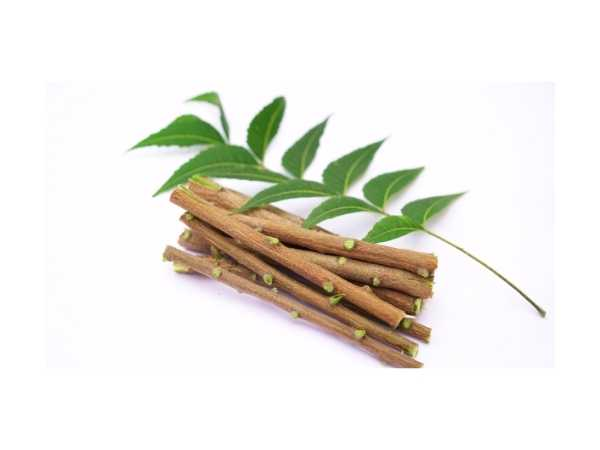

Azadirachta indica
Common Names: Neem, Indian Lilac, Margosa Tree
Local Name: Veppam (Tamil), Neem (Hindi), Bevu (Kannada)
Family: Meliaceae
Origin: Indian subcontinent; Myanmar, Bangladesh, Sri Lanka
Plant Type: Perennial evergreen to semi-deciduous tree
Average Lifespan: 150–200 years
| Growth Habit | Fast-growing, spreading tree with dense rounded crown |
| Plant Size | 15–20 meters tall; trunk diameter 30–60 cm |
| Leaves | Pinnate, 20–40 cm long; 9–15 leaflets, serrated, dark green |
| Flowers | Small, white, fragrant; in axillary panicles 10–25 cm long |
| Fruit | Olive-like drupe, 1–2 cm; yellow-green when ripe; bitter |
| Seed Characteristics | Single seed per fruit; high azadirachtin content |
| Root System | Deep taproot; highly drought-resistant |
| Climate | Tropical to semi-arid; extremely drought-tolerant |
| Temperature Range | 21–32°C ideal; tolerates up to 44°C; frost-sensitive when young |
| Rainfall Requirement | 400–1200 mm annually; survives in dry zones |
| Soil Type | Wide range; sandy, loamy, rocky; tolerates poor soils |
| Soil pH Preference | 6.2–8.5 |
| Sun Requirement | Full sun |
| Spacing | 5–8 meters between trees |
| Water Requirement | Low; highly drought-tolerant once established |
| Can it Grow in Pots? | Not suitable; needs open ground |
| Fertilizer Schedule | Minimal; compost once a year for young trees |
| Pruning Time | After flowering; remove dead branches annually |
| Common Pests | Neem is naturally pest-resistant; occasional scale insects |
| Common Diseases | Powdery mildew in humid conditions; generally disease-resistant |
| Flowering Months | February–April (India) |
| Fruiting Season | June–August |
| Average Yield per Plant | 50–100 kg seeds per mature tree annually |
| Pollination Type | Insect-pollinated; bees |
| Propagation by Seeds | Fresh seeds germinate in 1–3 weeks; viability drops quickly |
| Propagation by Cuttings | Root cuttings possible; less common |
| Water Usage | Very low; ideal for arid reforestation |
| Soil Conservation Practices | Deep roots prevent erosion; leaf litter enriches soil |
| Biodiversity Benefits | Supports birds, insects; provides dense shade |
| Commercial Production Regions | India, Pakistan, Bangladesh, Sri Lanka, Africa |
| Market Uses | Timber, neem oil, pesticides, pharmaceuticals, cosmetics, toothpaste |
| Processing Uses | Neem oil from seeds; neem cake as organic fertilizer; wood for furniture |
| Market Value (Approx.) | Neem oil ₹150–300/litre; neem cake ₹8–15/kg |
| Symbolism | Sacred in Hindu culture; associated with goddess Mariamman; planted near temples |
| Traditional Uses | Twigs as toothbrush (datun); leaves in bath water; used in Ayurveda and Siddha medicine |
| Anti-inflammatory Properties | Leaf and bark extracts show strong anti-inflammatory activity |
| Immune Support | Boosts immunity; antiviral and antibacterial properties |
| Digestive Health | Bark decoction used for digestive disorders and intestinal worms |
Disclaimer: Information provided is for educational purposes only and not a substitute for medical advice.
Add your field observations here.